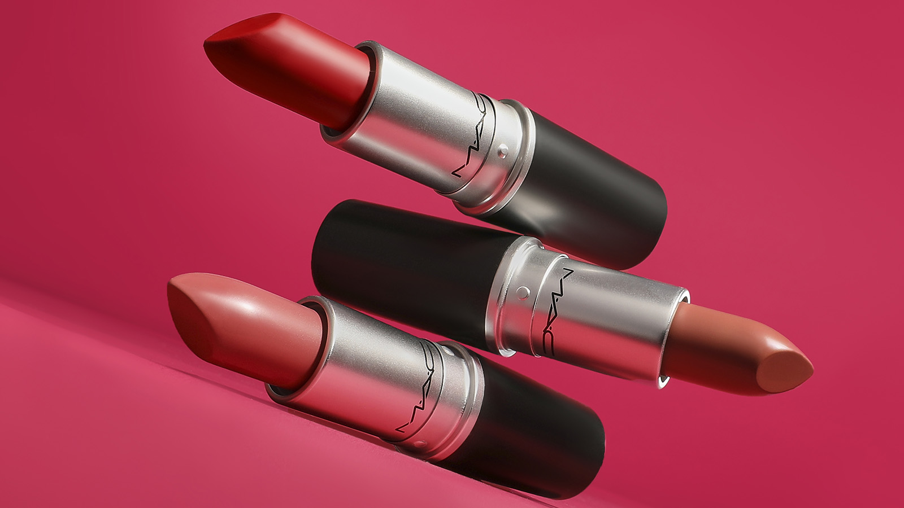
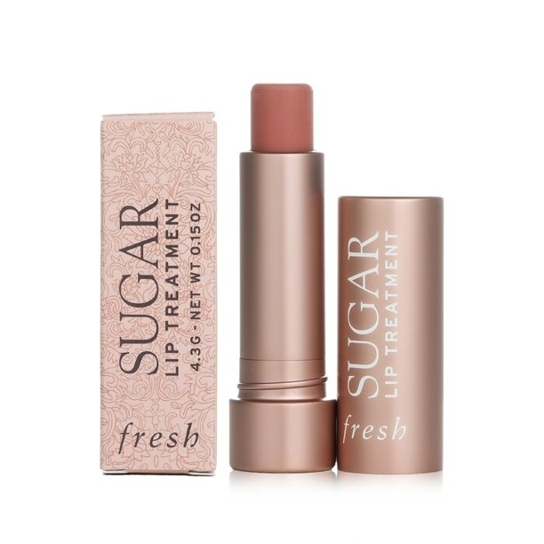
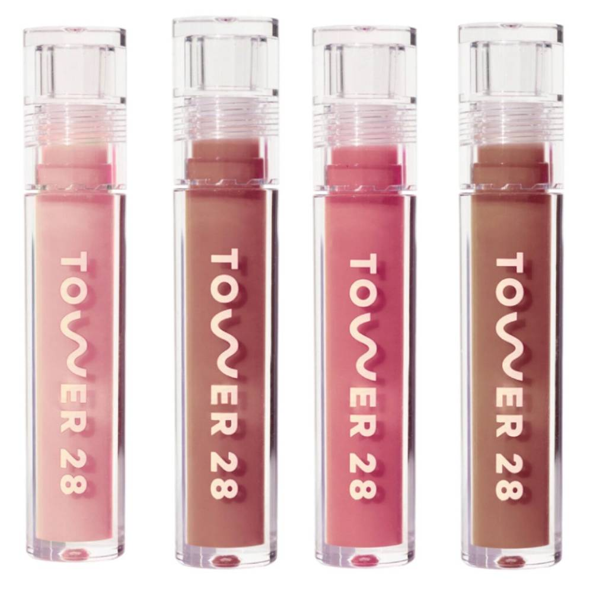
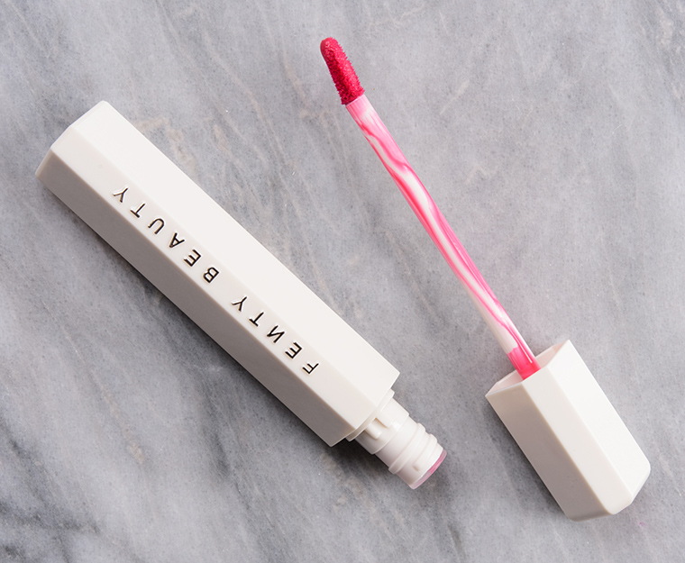
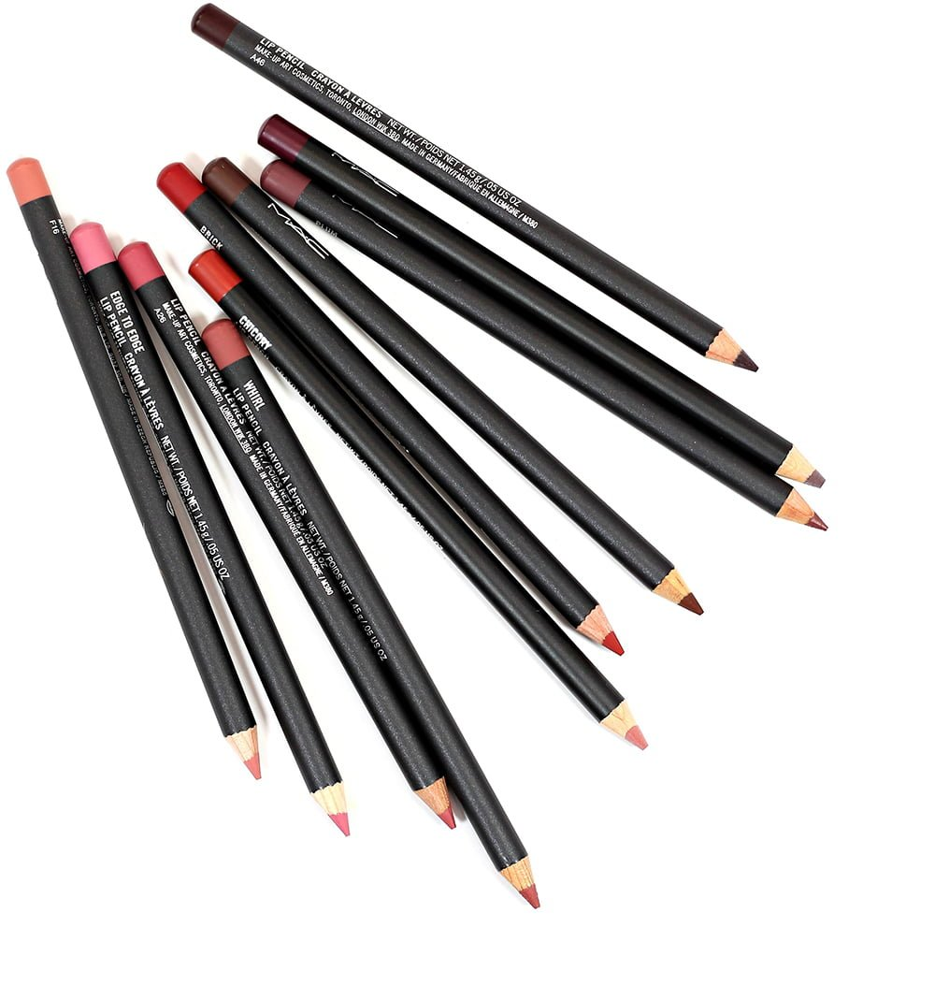
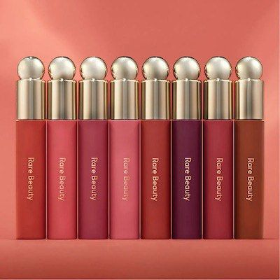
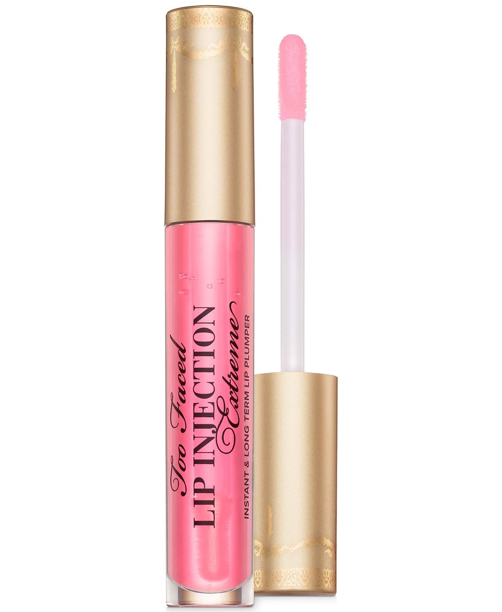

 Lipstick is widely known as one of the most popular lip products. They come in a variety of styles. Satin, glossy, matte, and more. Lipstick is compact, and easy to use. It comes in a small tube, and can last for quite a while. These also come in a variety of colours, however red is one of the most iconic colours of lipstick.
 Though not marketed as a makeup item, in modern day makeup it is widely used in makeup. Some come in many shades and variety, and can even replace other lip products. These are often much more moisturizing while still providing colour to the lips.
 Also another favourite by the makeup community, lip gloss can go on top of lipstick or other products, or can be applied by itself. These are used to give your lips a shiny, glossy juicy look. These can be very pigmented, or can be very sheer and clear so you can layer it.
 Lip tints or stains are some of the longer lasting lip products. As the names suggests, it tints or stains the lips so that the colour stays for a longer period of time. Often these are used, then lip gloss tops the stain off. If you want a reliable, long lasting colour on your lips, this is the go to product.
 As the name suggests, this lip liner is used to line the outside of your lips. Many people use this to get a nice sharp edge to their lips. Lip liners usually need to go with another product or else the harshness of the line may look weird. People often use clear gloss to blend out the line, or layer lipstick ontop.
 Lip oils are similar to lip glosses in the way they provide a nice glossy shine to your lips. However lip oils are targeted towards moisturizing your lips a lot more than your traditional lip gloss. These provide both moisture and colour to your lips.
 Lip plumper is a very experimental product. These are often lip glosses, infused with ingredients that will tingle your lips. Some formulas may even make your lips feel like they're burning, however this is usually temporary. These glosses make your lips much larger as your lip reacts to the burn and turns redder and enlargens.